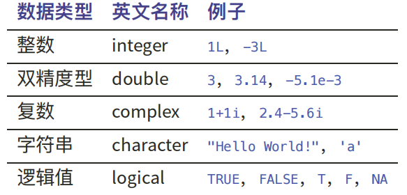
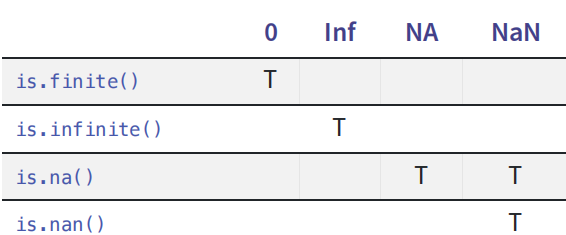

(x <- sqrt(2) ^ 2)[1] 2print(x == 2)[1] FALSEdplyr::near(x, 2)[1] TRUE
通过上面的代码也可知道，默认输入的数值数据是以双精度保存的。
检查数据类型的方法：
class 关注的是对象的高级类型，如 “data.frame”、“factor”、“matrix” 等，并且可以自定义和扩展。
typeof 函数描述的是对象的底层数据类型，提供更详细的内部存储信息。它返回的类型更加具体，如 “double”、“integer”、“character”、“list”、“closure”（函数）等。
mode 关注的是对象的底层存储模式，如 “numeric”、“character”、“list” 等。
比如说对于矩阵类型的数据，class关心的是这个数据使用矩阵matrix的结构储存的，mode关心的是每个数据记载着数值numeric而不是字符，typeof关心的是这个数值的类型或者说精度是双精度double。
下面提供一些更具体的例子，不过一般来说其实不怎么用到这个细节：
# 数值型变量
num_var <- 42
print(paste("num_var: mode =", mode(num_var))) # 输出： "numeric"
print(paste("num_var: typeof =", typeof(num_var))) # 输出： "double"
print(paste("num_var: class =", class(num_var))) # 输出： "numeric"
# 整数型变量
int_var <- 42L
print(paste("int_var: mode =", mode(int_var))) # 输出： "numeric"
print(paste("int_var: typeof =", typeof(int_var))) # 输出： "integer"
print(paste("int_var: class =", class(int_var))) # 输出： "integer"
# 字符型变量
char_var <- "Hello"
print(paste("char_var: mode =", mode(char_var))) # 输出： "character"
print(paste("char_var: typeof =", typeof(char_var))) # 输出： "character"
print(paste("char_var: class =", class(char_var))) # 输出： "character"
# 逻辑型变量
logical_var <- TRUE
print(paste("logical_var: mode =", mode(logical_var))) # 输出： "logical"
print(paste("logical_var: typeof =", typeof(logical_var))) # 输出： "logical"
print(paste("logical_var: class =", class(logical_var))) # 输出： "logical"
# 列表
list_var <- list(a = 1, b = "text", c = TRUE)
print(paste("list_var: mode =", mode(list_var))) # 输出： "list"
print(paste("list_var: typeof =", typeof(list_var))) # 输出： "list"
print(paste("list_var: class =", class(list_var))) # 输出： "list"
# 矩阵
matrix_var <- matrix(1:4, nrow = 2)
print(paste("matrix_var: mode =", mode(matrix_var))) # 输出： "numeric"
print(paste("matrix_var: typeof =", typeof(matrix_var))) # 输出： "double"
print(paste("matrix_var: class =", class(matrix_var))) # 输出： "matrix"
# 因子
factor_var <- factor(c("low", "medium", "high"))
print(paste("factor_var: mode =", mode(factor_var))) # 输出： "numeric"
print(paste("factor_var: typeof =", typeof(factor_var))) # 输出： "integer"
print(paste("factor_var: class =", class(factor_var))) # 输出： "factor"
# 数据框
df_var <- data.frame(x = 1:3, y = c("a", "b", "c"))
print(paste("df_var: mode =", mode(df_var))) # 输出： "list"
print(paste("df_var: typeof =", typeof(df_var))) # 输出： "list"
print(paste("df_var: class =", class(df_var))) # 输出： "data.frame"
# 函数
func_var <- function(x) x^2
print(paste("func_var: mode =", mode(func_var))) # 输出： "function"
print(paste("func_var: typeof =", typeof(func_var))) # 输出： "closure"
print(paste("func_var: class =", class(func_var))) # 输出： "function"(1) 双精度数据之间的相等
双精度只是一种近似，所以比较不同方法得到的数据需要进行比较的时候，不能使用 ==，而应该使用 dplyr::near()，该函数可以容忍一些数据误差
(x <- sqrt(2) ^ 2)[1] 2print(x == 2)[1] FALSEdplyr::near(x, 2)[1] TRUE注释：这里的dplyr是一个R包，而::表示了不需要library的加载而直接调用，并通过::指定该R包下的函数（调用格式为：package_name::function_name），有时也可以用作区分同名称的函数，也就是说如果不嫌麻烦的情况下也可将上面的代码写成这样：
library(dplyr)
Attaching package: 'dplyr'The following objects are masked from 'package:stats':
filter, lagThe following objects are masked from 'package:base':
intersect, setdiff, setequal, unionx <- sqrt(2) ^ 2
near(x, 2, tol = .Machine$double.eps^0.5)[1] TRUE#这里的tol表示了容许的误差值，默认值是 .Machine$double.eps^0.5，即机器精度的平方根。可以根据需要进行修改(2) 特殊的字符之间的相等
整型数据有 1 个特殊值 NA
双精度型数据则有 4 个特殊值：
NA（not available，不可用/缺失值）
并可以分为类型NA; NA_integer_; NA_real_; NA_complex_; NA_character_
NaN（not a number，不是一个数，通常在非法数学操作中出现）
Inf 和 -Inf（ 由除0所产生）
#例如：
c(-1, 0, 1, NA) / 0[1] -Inf NaN Inf NA不要使用 == 来检查这些特殊值，而应该使用辅助函数 is.nan() 、is.finite()和is.infinite()，检验的判断值如下：

例子：
(x <- c(10, 3, NA , 5, 8, 1, NA, c(-1, 0, 1) / 0)) [1] 10 3 NA 5 8 1 NA -Inf NaN Infmean(is.na(x)) #输出缺失值NA和NAN占全部数据的比例[1] 0.3sum(!is.finite(x)) #输出不正常值的个数，注意is.finite(x)只在常数时返回True[1] 5注意在这个时候，类型如is.na(x)的函数在对一个向量判断的时候，是统计其中符合该函数条件的数目。
仅罗列如下，方便查找即可。


补充：代码末尾用“;”连接可以视作不换行的分隔符继续写下面的代码
# 使用正斜杠
# setwd("C:/Users/August/···")
#getwd()可用于查看当前目录(y <- seq(1, 10, length.out = 5))[1] 1.00 3.25 5.50 7.75 10.00mean：数列取均值
runnif：生成一定范围的随机数
n 是生成的随机数的个数。
min 是随机数的下界（默认值为 0）。
max 是随机数的上界（默认值为 1）。
n <- 5
x <- runif(n, min = 0, max = 1)rm：移除空间已经有的变量
x <- 5
rm(x) #移除特定变量
rm(list = ls()) #移除全部变量rep：
x：要重复的值或向量。
times：每个元素重复的次数。
each：将每个元素重复多少次。
(rep(c(1, 2, 3), times = 2))[1] 1 2 3 1 2 3(rep(c(1, 2, 3), each = 3))[1] 1 1 1 2 2 2 3 3 3# 将向量 c(1, 2, 3) 重复 2 次，但每个元素分别重复 3 次
(rep(c(1, 2, 3), times = 2, each = 3)) [1] 1 1 1 2 2 2 3 3 3 1 1 1 2 2 2 3 3 3cbind: 合并数据
a <- 1
b <- 2
cbind(a,b) a b
[1,] 1 2在当前代码内创建函数：
add_numbers <- function(a, b) {
sum <- a + b
return(sum)
}调用函数：
result <- add_numbers(3, 5)在当前目录下子文件夹中创建函数包
调用函数：
# 加载函数文件
# 获取当前工作目录
current_dir <- getwd()
# 设置工作目录到函数文件所在的文件夹
setwd(file.path(current_dir, "代码", "函数"))
# 加载函数文件
source("add_numbers.R")
# 设置工作目录回到原始目录
setwd(current_dir)
#此时工作区已经有加载好了的函数add_numbers，调用方法同上：
result <- add_numbers(3, 5)一类特殊的函数：泛型函数，它会根据第一个参数的类调用特定方法，例如summary(x) 提供了输入对象的概览，可以处理很多模型的描述性统计的工作。
library(mosaicData)
summary(CPS85) wage educ race sex hispanic south
Min. : 1.000 Min. : 2.00 NW: 67 F:245 Hisp: 27 NS:378
1st Qu.: 5.250 1st Qu.:12.00 W :467 M:289 NH :507 S :156
Median : 7.780 Median :12.00
Mean : 9.024 Mean :13.02
3rd Qu.:11.250 3rd Qu.:15.00
Max. :44.500 Max. :18.00
married exper union age sector
Married:350 Min. : 0.00 Not :438 Min. :18.00 prof :105
Single :184 1st Qu.: 8.00 Union: 96 1st Qu.:28.00 clerical: 97
Median :15.00 Median :35.00 service : 83
Mean :17.82 Mean :36.83 manuf : 68
3rd Qu.:26.00 3rd Qu.:44.00 other : 68
Max. :55.00 Max. :64.00 manag : 55
(Other) : 58 summary(lm(wage ~ educ + sex + union, data = CPS85))
Call:
lm(formula = wage ~ educ + sex + union, data = CPS85)
Residuals:
Min 1Q Median 3Q Max
-8.711 -2.916 -0.680 2.020 36.099
Coefficients:
Estimate Std. Error t value Pr(>|t|)
(Intercept) -2.20909 1.03514 -2.134 0.033294 *
educ 0.75786 0.07598 9.975 < 2e-16 ***
sexM 1.89420 0.40330 4.697 3.37e-06 ***
unionUnion 1.90010 0.52349 3.630 0.000311 ***
---
Signif. codes: 0 '***' 0.001 '**' 0.01 '*' 0.05 '.' 0.1 ' ' 1
Residual standard error: 4.586 on 530 degrees of freedom
Multiple R-squared: 0.208, Adjusted R-squared: 0.2036
F-statistic: 46.41 on 3 and 530 DF, p-value: < 2.2e-16这里先补充解释来区分以下前一章“数据类型”和“数据结构”的区别，数据类型关注的是每一个数据本身是什么类型的数据，数据结构关注的是一组数据以什么方式来储存的结构。

注：列表和tibble（数据框）的区别是，列表允许不同长度的向量，这说明列表可以更自由的组合不同的矩阵、向量来储存，数据框更像是一个自变量的数据矩阵list化的结果。
直观的表示：

这几种类型主要差别在“维度”和“元素储存单位是否同质”，我们解释如下五种类型中，前三种依次是维度的逐渐扩大造成的变化，后两种是储存元素是否允许异质带来的差别。按照最开始分的类别，前三个都是同质的原子向量，后俩个是异质的泛型向量。
| Vector | Matrix | Array | Data frame | List |
|---|---|---|---|---|
| 向量 | 矩阵 | 数组 | 数据框 | 列表 |
这里额外补充说明“数组”的形式，它在二维的时候就是矩阵，三维的时候如图一样是一个方块，但调用的时候要额外注意你的数据到底在第几层的第几行第几列。n维的时候就不好直观展示了，但本质上来说，每一个维度都可以看做是一个分组，调用其实就是根据一个分组一个分组的索引去找。直观理解上呢，我一般把他比作切片的吐司面包片，每一片就是一个矩阵，合在一起就是一个方块的大面包。
{r} data <- 1:24 # 创建一个 2x3x4 的数组 (three_d_array <- array(data, dim = c(2, 3, 4)))}
另外还要提一个特殊的数据类型“NULL”表示不存在，对比之前提到的”NA“，后者表示的是存在但未知、缺失，可以说是将其当做一个任何常规属性的、替代数据在这个位置占位的类型，所以它是有长度的。而NULL表示的就是完全不存在，长度为0。
注：数据库管理系统中的 NULL 值相当于 R 中的 NA 值
通过新增加特性后，除了原子向量可以扩展为矩阵或数组以外，原子向量和列表还可构建出另外一
些重要的向量类型：
| Factor | Data frame/tibble |
|---|---|
| 因子 | 数据框 |
| 基于整型向量构建 | 基于列表构建 |
这俩不如上面的好理解，我们稍微解释一下：
因子（factor）是一种用于处理分类数据的特殊向量。因子通常用于存储定性（分类）数据，例如性别、颜色、品牌等。它们与字符向量类似，但因子主要区别在字符向量可以随便储存不同的字符就像文本一样，而因子明确的要用于分类，也就是一般来说通过factor的值可以将数据分成几个有限的大类。
此外，因子还有一些特殊的性质：
水平/类别（levels）：因子类型的数据内部有一个类别的集合levels，储存所有数据可能的类别，不管是采集错误还是特殊的类别，只要不在该集合内的所有值输入后都会自动转换为 NA。
存储为整数：因子内部存储为整数，每个整数对应一个类别。
有序因子和无序因子：因子可以是有序的（表示有顺序关系的分类数据，如大、中、小）或无序的（表示没有顺序关系的分类数据，如红、黄、蓝），可以在输入时额外的设置，这个属性很可能会影响回归的准确性。
注：这里的因子和因子分析里的因子不是一个意思，笔者在最开始稍微疑惑了下，实际上这里的因子直接理解为分类变量就好了，而因子分析里的因子其实大致是若干个自变量的意思。
操作注记：alt+-连按表示了带空格的等于号“ <- ”
#数值：
(vector1 <- c(1,2,3,4,5))[1] 1 2 3 4 5 #也可以创造有序间隔数（双精度）
(vector1_1 <- seq(0, 10, length.out = 5))[1] 0.0 2.5 5.0 7.5 10.0#字符:
(vector2 <- c("one", "two", "three", "four", "five"))[1] "one" "two" "three" "four" "five" 额外说明下c()的赋值是双精度和文本类型（字符串）：
cat(typeof(vector),typeof(str))closure closure填充数据型
data=1:15
(mymatrix <- matrix(data,#需要填充进矩阵的数据
nrow=5,#行数
ncol=3,#列数
byrow=FALSE,#默认按列填充，即先按序将第一列填满再填第二列
dimnames=list(c("r1","r2","r3","r4","r5"),
c("c1","c2","c3"))#这里对行、列进行命名
)) c1 c2 c3
r1 1 6 11
r2 2 7 12
r3 3 8 13
r4 4 9 14
r5 5 10 15 #上述可以简化为：
matrix(data=1:15, ncol=5, nrow=3) [,1] [,2] [,3] [,4] [,5]
[1,] 1 4 7 10 13
[2,] 2 5 8 11 14
[3,] 3 6 9 12 15直接生成单一数值元型
# 创建一个 3 行 3 列的全 0 矩阵
matrix_zeros <- matrix(0, nrow = 3, ncol = 3)
print(matrix_zeros) [,1] [,2] [,3]
[1,] 0 0 0
[2,] 0 0 0
[3,] 0 0 0向量合并型
# 创建三个向量
vec1 <- c(1, 2, 3)
vec2 <- c(4, 5, 6)
vec3 <- c(7, 8, 9)
# 使用 cbind 合并向量
(result_matrix <- cbind(vec1, vec2, vec3)) vec1 vec2 vec3
[1,] 1 4 7
[2,] 2 5 8
[3,] 3 6 9额外注意下这里本来的向量是行向量，但拼接的时候是先把他们全变成列向量再依次拼接的。
如果拼接对象本身就是矩阵的话，同样也是从左到右依次的例如A和B拼起来就是（A,B）。如果维数不匹配，会自动重复低纬的向量来填充。
创建方式基本和上面相同，毕竟只是维度上的扩增而已，额外小心的地方就是这里维度是需要输入向量，命名是需要输入列表的。
dim1 <- c("A1", "A2", "A3", "A4") # 第一个维度的变量名,维度长度为 3
dim2 <- c("B1", "B2", "B3") # 第二个维度的变量名,维度长度为 3
dim3 <- c("C1", "C2") # 第三个维度的变量名,维度长度为 2
(z <- array(data = 1:24,
dim = c(4, 3, 2), # 各个维度的长度
dimnames = list(dim1, dim2, dim3))) # 各个维度的变量名, , C1
B1 B2 B3
A1 1 5 9
A2 2 6 10
A3 3 7 11
A4 4 8 12
, , C2
B1 B2 B3
A1 13 17 21
A2 14 18 22
A3 15 19 23
A4 16 20 24可以这么来记三维数组的格式，前俩个就是正常的矩阵的行列，第三个参数就是这是第几片矩阵。在调用的时候，以下两种方法结果是一样的。
z[3, 1, 2] == z["A3","B1","C2"][1] TRUE创建方式很简单，只要用list()把你想要的变量名包起来并用逗号隔开就好了。注意如果是按照下面的例子在list（）内部有num_vector = c(1, 2, 3)的形式，那么相当于顺便起了个名字“num_vector”,而如果是单纯的list（num_vector，char_vector）对已知的向量包起来的话是没有名字的，调用也只能通过数值调用。
# 创建一个包含不同类型元素的列表并顺便命名
my_list <- list(
num_vector = c(1, 2, 3), # 数值向量
char_vector = c("a", "b", "c"), # 字符向量
matrix_2x2 = matrix(1:4, 2, 2), # 矩阵
sub_list = list( # 嵌套列表
x = 10,
y = "hello"
)
)
# 查看列表内容
print(my_list) #查看的排版比较宽松，主要展示的是每一个列名对应数据的内容$num_vector
[1] 1 2 3
$char_vector
[1] "a" "b" "c"
$matrix_2x2
[,1] [,2]
[1,] 1 3
[2,] 2 4
$sub_list
$sub_list$x
[1] 10
$sub_list$y
[1] "hello"str(my_list) #查看的排版比较紧凑，主要展示的是每一个列名对应数据的类型/结构List of 4
$ num_vector : num [1:3] 1 2 3
$ char_vector: chr [1:3] "a" "b" "c"
$ matrix_2x2 : int [1:2, 1:2] 1 2 3 4
$ sub_list :List of 2
..$ x: num 10
..$ y: chr "hello"注：列表可以嵌套，意思就是一个列表里可以包含另一个列表，一层层套下去，如图示一样每个正方体都是数值，圆角框就是一个列表：

访问/修改/删除列表元素：
# 访问数值向量，意思就是按照创建列表时从前到后的第几个来索引
num_vector <- my_list[[1]]
# 使用名称访问数值向量
num_vector <- my_list$num_vector
print(num_vector)[1] 1 2 3注，我们提及下几个要点：
创建列表用的是list（）括号，但用数值访问时是list[[1]]不要搞错了，使用名称$name访问和[[]]是一样的。
能访问那修改就是和一般变量一样的my_list$num_vector <- a
增加元素只需要调用你打算起的新列名当做已知来赋值就行。
# 使用名称添加新元素
(my_list$new_element <- "new value")[1] "new value"删除元素只需要调用名称给他赋值NULL即可
# 使用名称移除元素
my_list$new_element <- NULL如果想要取子集，也就是提取列表中的多个元素，使得提取出来后还是一个列表，那需要用[]来提取，这比之前少了一层[]，可以说[[]]多了的[]像剥水果一样去掉了一层数据的一层结构。另外，此时显然用向量数值调用会比单独用名称一个个调用完再合并快的多（如果你知道你想要的元素在list的第几个的话）。
str(num_vector <- my_list[c(1,2)])List of 2
$ num_vector : num [1:3] 1 2 3
$ char_vector: chr [1:3] "a" "b" "c"无序因子
方法1：先新建因子集合levels，然后再输入数据：
x1 <- c("Dec", "Apr", "Jam")
month_levels <- c( "Jan", "Feb", "Mar", "Apr", "May", "Jun","Jul", "Aug", "Sep", "Oct", "Nov", "Dec" )
(y2 <- factor(x1, levels = month_levels))[1] Dec Apr <NA>
Levels: Jan Feb Mar Apr May Jun Jul Aug Sep Oct Nov Dec如前面所说的，x1[3]由于拼写错误不在levels内，于是转化为NA。输出的结果里第一行是转化后最终输入的因子，第二行是因子集合。
方法2：先有数据集，然后直接根据数据集中分类变量的集合创建因子水平：
data <- c("红色", "蓝色", "绿色", "红色", "蓝色", "红色")
(factor_data <- factor(data))[1] 红色 蓝色 绿色 红色 蓝色 红色
Levels: 红色 蓝色 绿色有序因子
其实这里和之前的唯一差别就是在设置因子水平levels要实现排个序，然后开启factor里的参数ordered = T就可以了。
# 创建一个包含字符向量的数据
sizes <- c("小", "中", "大", "中", "小", "大")
# 将字符向量转换为有序因子
(ordered_sizes <- factor(sizes, levels = c("小", "中", "大"), ordered = TRUE))[1] 小 中 大 中 小 大
Levels: 小 < 中 < 大此外由于有了比较排序的定义，相应的可以对因子进行比较大小的操作，例如下面的操作就可得到一个判断数据大于给定水平的逻辑向量，从而可以进行相应的筛选等等操作：
sizes >= "中"[1] FALSE TRUE FALSE TRUE FALSE FALSE数据框的创建方式和list几乎一样，只要data.frame()包住你要加入的任何类型的等长度变量就行，不过你会发现输出的格式似乎高级了一点，并且此时data.frame是不需要额外命名的，它会自动获取你包起来的变量的变量名，而list就做不到这一点。
不过注意获取名称时会自动校正一次，例如原数据集中有个变量名为 “Health Insurance” ，传统data.frame 会把变量名改为“Health.Insurance”（因为基础 R 函数中变量名不能有空格）
此外，下面row.names=c('r1', 'r2','r3','r4') 的这一部分给行命名是可以去除的，它的主要好处是例如你搜集的是年份的数据，那最后不管做什么操作时要关注某一年特殊表现时可以直接查看行名称来获取对应年份是哪一年。
ID <- c(1, 2, 3, 4)
age <- c(25, 34, 28, 52)
insurance <- c("yes", "no", "yes", "yes")
health <- c("Poor", "Improved", "Excellent", "Poor")
(survey_data <- data.frame(ID, age, insurance, health,row.names=c('r1', 'r2','r3','r4'))) ID age insurance health
r1 1 25 yes Poor
r2 2 34 no Improved
r3 3 28 yes Excellent
r4 4 52 yes Poor从介绍上看tibble是一种现代化的改进数据框，提供了更好的打印格式、避免意外转换、增强的类型检查以及与 tidyverse 生态系统的良好兼容性——这都是我问AI的hhhh总之对于新生来说，记得tibble比data.frame厉害就行，额外注意下因为这个格式比较新所以有些旧的R包可能不匹配，还是得用data.frame。
如果要说具体区别在哪，这里简单罗列一下：
更清晰的打印格式：tibble 提供简洁、整洁的打印格式，即使数据很大，也只显示前 10 行和所有列的前 10 个字符。这有助于在控制台中查看数据结构，而不会被过多的信息淹没。
避免意外转换：tibble 在子集操作时，不会像 data.frame 那样自动简化结果。例如，从 tibble 中提取单列时，结果仍是 tibble 而不是向量。
兼容性和扩展性：tibble 与 data.frame 兼容，并且可以与 dplyr 和 tidyr 等 tidyverse 包无缝协作。
更严格的类型检查：tibble 在创建时会进行严格的类型检查，确保数据类型的一致性，减少类型错误。
非标准评估：tibble 支持非标准评估，使得在代码中使用变量名更加方便和直观。
更好地处理缺失值：tibble 更好地处理缺失值，并在打印时明确显示。
读取excel或者csv进来read_csv()的数据一般来说就是以tibble储存的，总之根据上面的种种优点来看，没事用tibble就对了!所以我们再提一下转化为tibble格式的函数，这里有一个之前没提到的细节，因为前面向量创建时都默认是行向量，转化为矩阵时填充是默认先填满第一列在填下一列，而这里的tibble转化和list转化都是把他们变成了列向量然后再合并在一起的：
x <- c(1:5)
(y <- as_tibble(x))# A tibble: 5 × 1
value
<int>
1 1
2 2
3 3
4 4
5 5我们这里再提一下tibble几个需要留意的特性：
不关心输入类型，可存储任意类型，包括list类型
tibble没有行名设置 row.names
tibble自动添加列名且不会修改不合法的列名（但后面调用起来还是很麻烦，不如一开始都规范下）
tibble会自动重复长度为 1 的输入（向量循环），也就是如果某一个输入例如y = 1，那么tibble会自动填充符合长度的全为1的一列
和data.frame和list不一样，从tibble中提取的子集格式仍然是tibble
(a1 <- c(x = 1, y = 2, z = 4))x y z
1 2 4 在 R 语言中，attributes() 函数用于访问或设置对象的属性。属性是存储在对象中的元数据，提供有关对象的信息或额外的数据。常见的属性包括 names（名称）、dim（维度）、class（数据结构） 等。
# 创建一个向量
a1 <- c(1, 2, 3, 4)
# 查看向量的属性，结果为NULL，因为默认情况下，向量没有任何属性
attributes(a1)NULLa1 <- c(1, 2, 3, 4)
# 给向量添加一个名字属性
names(a1) <- c("one", "two", "three", "four")
# 再次查看属性
attributes(a1)$names
[1] "one" "two" "three" "four" 此时名字可以看做是调用向量中每个值的索引，相应调用方式改变如下，这主要是在数据繁多的时候有时为了区别某些数值为特殊的意义所设置的调用方式，如我要单独调用“因子数量”并在代码中表示这一点，就可以这么写。另外，命名向量也有助于更加方便地进行向量子集的提取以及其他子集操作。
# 通过名字属性来访问元素
cat(a1["one"],a1["three"]) # 返回 1 31 3另外，因为改变属性本质上是创建对数值的一个调用索引，所以也可以单独创造一个新的索引不对应原来的某个数据位置，单纯地为了储存这个向量的某个标签：
# 添加一个自定义属性，可以看做是标签
attributes(a1)$tag <- "this vector is used to ····"
# 查看所有属性
attributes(a1)$names
[1] "one" "two" "three" "four"
$tag
[1] "this vector is used to ····"注：这里notebook的运行方式有点特殊，因为我把代码分了几个块，必须从最开始的含有创建向量的代码运行后，后面的代码才能有操作的a1对象。
注记：quarto格式输出的pdf和html都没办法在知乎内发表，直接粘贴qmd文件里的格式到markdown格式里会导致图片全部不能跟过去的问题，需要一个一个重新传上去，后来解决方法是直接导出的格式（最开始那部分format的部分）设置为md，结果还真能导出含有所有图片的md文件，然后再用vscode打开。
但这里还有一个问题是，这个类型转的md文件虽然能在vscode里的预览正常显示，但是知乎似乎识别不了这个上传的方法，而如果重新再导入图片的话，因为屏幕截图类型的文件里连接符是“-”，vscode里无法识别会自动认为是空格，而上传图片的代码引用的文件名里有空格又会报错，所以如果重新导入图片不仅要改图片名称还要再一个个导入。
解决方法是，在vscode里可以直接复制预览里的图片，原地粘贴，这个时候就可以正常显示了，只不过要每个图片都原地复制粘贴，再把原来的代码删掉过一遍。